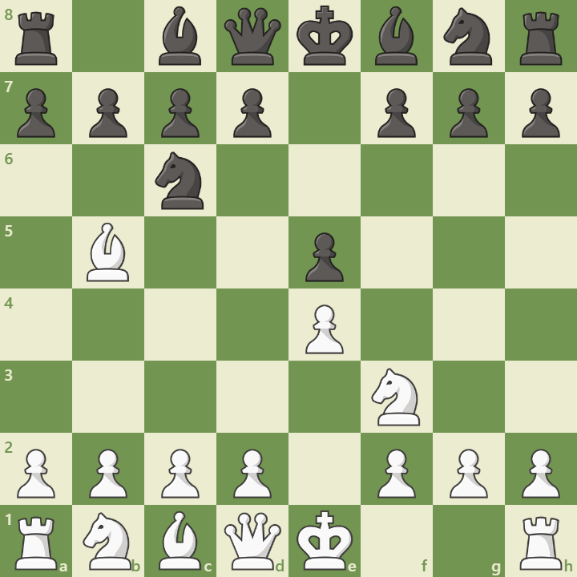

Abertura Ruy Lopez
A abertura Ruy Lopez, também conhecida por abertura espanhola, é uma das mais antigas do xadrez, analizada pelo padre Ruy Lopes de Segura no livro "Libro de la Invención Liberal y Arte del Juego del Ajédrez"
como funciona a abertura Ruy Lopez
esses são os movimentos:
- e4
- Cf3
- Bb5
